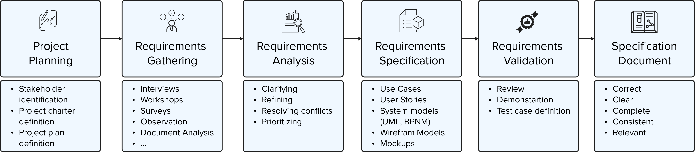

My Approach
The outcome of the requirements engineering process is a well-defined specification document that contain clear, correct, complete, consisten, relevant, and validated product specifications that serves as a blueprint for implementation.
I tailor the requirements engineering process to meet the needs and involvement of my stakeholders. Ideally, the process is iterative rather than linear, allowing me to develop, adjust, and validate requirements rapidly through continuous and close collaboration with stakeholders.
Project Planning
Project planning phase is a key phase where I define the scope and align the project with business goals. I cover this involving process under Project Management on my portfolio. For traditional Project Management, I follow methods and structure of the Project Management Institute (PMI).
Requirements Gathering
I practice a customer and user centered approach to develop requirements. This approach allows me to deliver high-value solutions that are tailored to the customer and user needs and consequently have a high acceptance and buy-in rate. Below are the key methods I frequently use for requirements development:
- Interviews
- Workshops
- Surveys
- Observations
- Document Analysis
- Storyboarding
- Brainstorming
- Mindmaps
- Focus Groups
Requirements Analysis
In this phase, I ensure that all requirements are well-defined, feasible, and aligned with the project’s goal. Below are the key activities I frequently use for requirements analysis:
- Clarifying Requirements
- Refining Requirements
- Resolving Conflicts
- Prioritizing (e.g., value, risk, feasability)
Requirements Specification
In requirements specification, I document the analyzed requirements in a consistent, clear, structured, and formal way to provide an authorative document for the design, development, and testing of the product. Below are the key elements I frequently and proficiently use for requirements specification:
- Use Cases
- User Stories
- Unified Modeling Language (UML)
- Business Process Model and Notation (BPMN)
- Wireframe Models
- Mockups
Requirements Validation
I use requirements validation to ensure that the requirements accurately reflect the needs and expectations of stakeholders and that they are feasible, clear, and unambiguous. I see the validation phase as a critical step in the requirements engineering process to prevent errors and misunderstandings early in the project lifecycle. Below are the key activities I frequently use for requirements validation:
- Review
- Demonstration
- Definition of Test Cases
{kind=link}
{kind=link}
{kind=link}
{kind=link}
{kind=link}
{kind=link}
{kind=link}
{kind=link}
{kind=link}
{kind=link}
{kind=link}
{kind=link}
{kind=link}
{kind=link}
{kind=link}